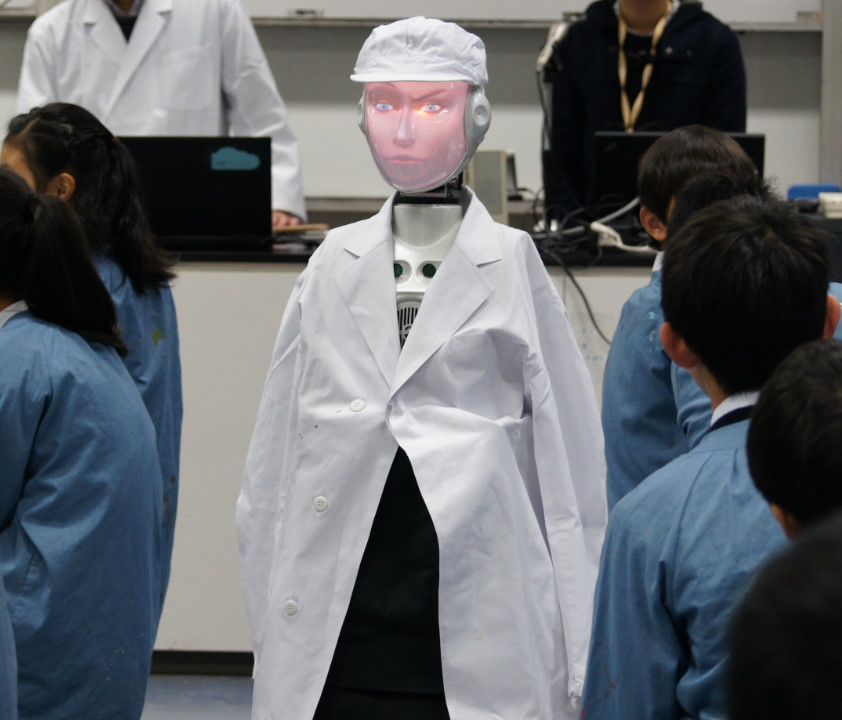

本研究JST/CREST「実践知能アプリケーション構築フレームワーク PRINTEPS（読み方：プリンテプス、以降PRINTEPS）の開発と社会実践」(2014.10-2020.3)は、開発者向けではなく、ユーザ自身が、聞いて話して（音声対話）、考えて（知識推論）、見て動いて（画像センシング・動作）という一連の知的振舞いを実行する人工知能・知能ロボットアプリケーションを数時間から数日で開発でき、その知的振舞いを見て考察・再発見することで、知のPDCAサイクルがまわり、ユーザと人工知能・知能ロボット間の知能共進化（Co-evolution of Intelligence）が起こるプラットフォームの開発を目指しています。
PRINTEPSは、ユーザにとって必要なAIアプリケーションをユーザ自身が開発できるプラットフォームであり、多様なAIアプリを社会に普及させるためのエンジンです。
ニュース
- 2019年10月 3日(木)：PRINTEPSに関する記事が Open Access Government に掲載されました ( URL)
- 2019年 8月 3日(土)：「AIロボットを使った授業作りを学ぼう」第1回セミナーを開催しました
- 2019年 2月 8日(金)：読売教育ネットワーク会報49号2019年1月号に議論支援ロボットの取り組みが掲載されました(URL)
- 2018年12月 1日(土)：PRINTEPSに関する記事がScience Impactに掲載されました ( URL)
- 2018年 2月28日(水)：読売教育ネットワーク会報38号2018年2月号に教師ロボット連携授業の取り組みが掲載されました(URL)
- 2018年10月 6日(土)-7日(日)：慶應義塾大学理工学部の第19回矢上祭で，ロボット喫茶店を出店しました
- 2017年11月18日(土)： 第１回クラスルームＡＩシンポジウムを開催しました
- 2017年10月 7日(土)-8日(日)： 慶應義塾大学理工学部の第18回矢上祭で，ロボット喫茶店を出店しました
- 2016年12月28日(水)：読売教育ネットワーク会報24号2016年12月号に教師ロボット連携授業の取り組みが掲載されました(URL)
PRINTEPSとは
本プロジェクトでは、知識ベース推論、音声対話、画像センシング、動作計画、機械学習の統合知能アプリケーションをエンドユーザが容易にデザイン・開発できるプラットフォームPRINTEPS（PRactical INTElligent aPplicationS）の研究開発およびロボット喫茶店と教諭ロボット連携授業の適用実践を進めています。
PRINTESPの研究意義としては、プロダクト的には、機械学習や知識ベース推論システムに限定された、特定知能アプリケーションでは、現場での利用（サービスの）観点からは不十分であるので、知識ベース推論、音声対話、画像センシング、動作計画、機械学習の要素知能を組み合わせた統合知能アプリケーションの開発にあります。 また、プラットフォーム的には、開発者だけではなく、エンドユーザが設計段階から参加でき、あまり複雑でない統合知能アプリケーションならば、エンドユーザだけで対応できるツールの開発にあります。
こうして、最終的には、PRINTEPSは、AIをどのようにデザインして利用すれば、様々なフィールドで役に立つのかという知見である「AI利用知」が蓄積され利用可能となる、「みんなのAI」プラットフォームに進化できるものと考えています。
このプロジェクトで使用されているロボット

|

|
|||||
|
Pepper ©SoftBank |
NAO ©SoftBank |
Sota ©Vstone |
SociBot ©Engineered Arts |
Hironx ©KAWADA |
HSR ©TOYOTA |
JACO2 ©Kiova |
研究内容
以下の「PRINTEPS」、「ロボット喫茶店」、「教諭ロボット連携授業」のタブを選択すると、各研究内容が表示されます。
- PRINTEPS
- ロボット喫茶店
- 教諭ロボット連携授業
概要
PRINTEPSは、サービス、プロセス、モジュールを組み合わせたワークフローを構築するだけで、知識推論、音声対話、画像センシング、動作計画という4種類の要素知能を統合した総合知能アプリケーションを、エンドユーザが容易に開発できることを目指したプラットフォームです。構築したワークフローは、代表的なロボット開発環境であるROS (Robot Operating System)上で実行可能なPythonのソースコードに自動変換することが可能です。
知能ロボットのために、聞いて話して（音声対話）、考えて（知識推論、機械学習）、見て動いて（画像センシング、動作計画）という一連の知的振舞いを、エンドユーザが俊敏（アジャイル）に開発して外在化させることを支援します。
ユーザが知能ロボットの知的振舞いを見て考察・再発見することにより、知能のPDCAサイクルがまわりはじめ、知能共進化(Co-evolution of Intelligence)（人の知能と機械知能が互いに進化し続けていくことで、所与の問題が解決される）を実現できると考えています。以下では、PRINTEPSのアーキテクチャについて紹介します。
PRINTEPSアーキテクチャ
図１に、PRINTEPSアーキテクチャの構成を示します。PRINTEPSでは、ROSに準拠したモジュールの入出力仕様および通信プロトコルを実装し、５つのサブシステム（知識ベース推論、音声対話、画像センシング、動作計画、機械学習）から構成されます。知識ベース推論は、ワークフロー、ビジネスルール、オントロジーを主に参照し、音声対話システムは、言語理解ルール、対話処理用ルール、応答生成用ルールを参照します。また、人間と機械のマルチモーダルなインタラクションにより取得した知識ログ、対話ログ、表情・視線・姿勢・動作ログ、環境ログなどは、オンラインおよびオフラインの機械学習の入力となり、機械学習に利用されます。各システム間のデータは、信号から記号までの多粒度ブラックボードを介して行われます。PRINTEPSは、AIアプリケーションをユーザ自身が容易に開発できるように、多重知識ベースエディタを提供しています。以下では、多粒度ブラックボードと多重知識ベースエディタについて紹介します。
多粒度ブラックボード
多粒度ブラックボードは、PRINTEPSのサブシステム間でデータを共有するためのデータベースです。PRINTEPSでは、mongodb_store を多粒度ブラックボードとして実装するために用いています。mongodb_storeは、ROSにおけるメッセージをMongoDBに格納したり、MongoDBから取得することが可能なAPI群を提供しています。PRINTEPSでは、知識ベース推論、音声対話、画像センシング、動作計画、機械学習の各モジュール間の入出力データとしてROSのメッセージを用いており、任意の時点で各モジュールの出力結果を多粒度ブラックボードに格納し、各モジュールが多粒度ブラックボードに格納されているメッセージを参照する事ができます。
多重知識ベースエディタ
多重知識ベースエディタは、ワークフロー、ルールベース、オントロジーを統合したエディタです。多重知識ベースエディタでは、ワークフローエディタとシナリオエディタを用いて、人と機械（ロボットやセンサーなど）の作業手順やそれらのインタラクションを記述することができます。シナリオエディタは、プロセスとモジュールを実行するアクターの観点に基づいて、プロセスとモジュールの実行手順を記述可能なエディタです。ワークフローエディタは、サービス、プロセス、モジュールの実行順序を記述可能なエディタです。
以下では、ワークフローエディタとシナリオエディタの概要およびビジネスルール管理システムとの連携について説明します。
ワークフローエディタ
図２にPRINTEPSワークフローエディタとROSソースコード生成の概要図を示します。 ワークフローエディタは、SOA（サービス指向アーキテクチャ）に基づき、知識、対話、画像センシング、動作、機械学習の各種モジュール群を組み合わせて、ビジネスプロセスのワークフローを構成し、ビジネスプロセスを組み合わせてサービスのワークフローを構成し、サービスのワークフローにより実現されるアプリケーションを開発事例（ベストプラクティス）として保存できます。保存された開発事例は、開発事例共有システムによりユーザ間で共有されます。
ワークフローエディタは、ユーザがSOAに基づいてワークフローを構築した後に、ワークフローにおけるサービスとプロセスおよびプロセスとモジュールの包含関係、モジュール間の入出力関係などを保存したプロジェクトファイル（JSON）を保存可能です。プロジェクトファイルを入力として、ROSソースファイル生成プログラムにより、ROS環境で実行可能なROSソースファイル（Python）を生成します。その後、ROS環境にソースファイルを配置し、ROSマスターノードと接続して、クライアント実行ノードとして実行する事が可能となります。
プロセスは、複数のモジュールをまとめるための関数的な役割を持ち、プロセス内には、プロセスおよびモジュールを混在して定義することができる。サービスは、最も粒度の粗い機能であり、プロセスのみから構成される。サービスに包含されるプロセスはビジネスプロセスとして定義します。
ワークフローエディタにおける第1階層（ルートサービス）は、ルート開始、サービスリスト、ルート終了のみから構成されます。完成したサービスリストは、開発事例として、ユーザ間で共有できるようにします。これにより、どのようなサービス、プロセス、モジュールが開発事例で利用されているかを容易に検索できます。
その他に、基本制御部品、グローバルおよびローカルなデータ蓄積・参照部品、ユーザが直接入力するための固定データ部品なども提供します。
シナリオエディタ
シナリオエディタは、プロセスとモジュールを実行するアクター（人と機械をまとめてアクターと呼びます）の観点に基づいて、プロセスとモジュールの実行手順を記述可能なエディタです。教諭ロボット連携授業アプリケーションにおいて、教師自身が授業をデザインする際に、アクターごとに分けて、プロセスの実行順序が記述できた方が授業全体の流れを理解しやすいことから、シナリオエディタの開発を行いました。
図３に、シナリオエディタのスクリーンショットを示します。シナリオエディタでは、プロセスおよびモジュールは左から右に向かって実行されます。シナリオエディタの画面は横方向にレーンで区切られており、各レーンにはアクターおよび表示装置を割り当てることができます。レーンに割り当てることが可能なアクターおよび道具は、アクターおよび表示装置のクラス階層におけるクラスのインスタンスの中から選択します。
PRINTEPSにおけるプロセスまたはモジュールには、メタデータとして前述のレーンに割り当てたアクターまたは表示装置（道具）クラスのインスタンスを割り当てることができます。アクターまたは道具クラスのインスタンスを割り当てることにより、該当プロセスまたはモジュールは、割り当てたインスタンスに対応するレーンのみに表示されるように制限をかけることができます。
ワークフローエディタでは、プログラムから実行可能なロボットやセンサに関連するプロセスまたはモジュールのみから構成されていましたが、シナリオエディタでは、教師や生徒のような人間が行うプロセスも表現可能です。これにより、例えば、授業進行における教師の発言をシナリオエディタ上で表現することができ、教師はロボットを用いた授業進行において、どの場面でどのような発言をすべきかを把握しやすくなります。
シナリオエディタはワークフローエディタと互換性があり、ワークフローの別の表現形式と見なすことが可能です。ユーザは、ワークフローエディタとシナリオエディタのいずれかをプロセスごとに選択することができます。
ビジネスルール管理システムとの連携
ビジネルルール管理システム (BRMS)は、ビジネスルールエンジンを提供し、ビジネスルールをGUIにより管理可能なシステムです。本研究では、Drools をBRMSとして用います。Droolsは、ドメイン特化言語 (DSL)を用いて、自然言語に近い形式でビジネスルールを定義する機能を持ちます。
従来の知識ベースシステムとの違いの１つとして、人の属性などの画像センシング結果をビジネスルールにおける条件部に利用できる点が挙げられます。また、ロボットのアクション (発話や移動など)をビジネスルールにおける結論部から直接実行することができます。
知識ベース推論が必要な場合には、ROSにおけるメッセージをResource Description Framework (RDF)形式に変換し、Semantic Web Rule Language (SWRL)を用いて推論を行います。
関連文献
PRINTEPSの有用性を評価するために、本プロジェクトでは、ロボット喫茶店を実践しています。以下では、慶應義塾大学矢上祭におけるロボット喫茶店の実践について紹介します。ロボット喫茶店の実践の詳細については、関連文献[1,2]を参照してください。
ロボット喫茶店の構成
2017年10月7日（土）と8日（日）に、慶應義塾大学第18回矢上祭において、ロボット喫茶店の実践を行いました。図１に、ロボット喫茶店の構成を示します。入口、カウンター、四人掛けのテーブル2セット、二人掛けのテーブル2セット、ペットボトルディスペンサ、カップディスペンサ、ペットボトル棚、カート、アーム型ロボットJaco2、接客用ロボットPepper、配膳用ロボットHSRを図1のように配置しました。
入口前方には1台、Kinect v2を配置し、主にお客の入店人数の把握や入店検知に用いました。カウンターにはマイクを設置し、注文時の音声認識に用いました。カウンターには、3台のペットボトルディスペンサとカップディスペンサも配置し、オレンジジュース、アップルジュース、アイスティー、ミックスジュースを用意できるようにしました。図２は、カウンター周辺の様子を撮影した写真です。ペットボトル棚には、ドクターペッパー、カルピス、お茶のペットボトルをSサイズとMサイズに分けて図１に示すように配置しました。図３は、ペットボトル棚周辺の様子を撮影した写真です。各テーブルには、全方位カメラを設置し、座席に座っている人を検知することにより、空席状況を把握できるようにしています。また、各テーブルには押しボタンを用意し、ボタンが押された際に、HSRがテーブルまで移動し、顧客が手渡しで空のペットボトルまたは紙コップをHSRに渡すことにより、ペットボトルまたは紙コップを片づけられるようにしました。図３の写真には、HSRがペットボトル棚の横に設置したゴミ箱に、紙コップを捨てている様子が写っています。また、図４は、テーブル周辺の様子を撮影した写真です。
Pepperは、注文時の対話や座席案内に用いています。Pepperには、測域センサを搭載し、走行時に自己位置を推定できるようにしました。HSRは、注文内容に応じて、ペットボトル棚からペットボトルを掴み、複数の注文があった場合には、カートを利用し、そうでない場合には、直接、テーブルにペットボトルを運搬しました。Jaco2は、注文内容に応じて、カップディスペンサから紙コップを取り出し、対応するペットボトルディスペンサに紙コップをセットし、注文されたサイズに応じた時間レバーを引いて、顧客に飲み物を提供しました。ミックスジュースが注文された場合には、オレンジジュースとアップルジュースを半分ずつ注ぎます。
Kinect v2、全方位カメラ、各種ロボットには、制御用のノートPCが有線（図１の実線）または無線（図１の点線）で接続されています。各テーブルに設置した押しボタンはラズベリーパイに接続されています。さらに、PRINTEPSワークフローエディタで作成したワークフローの実行と知識推論のために知識処理用ノートPCを1台、音声対話システム用にノートPCを1台、利用しました。
ロボット喫茶店のサービス概要と各要素知能の役割
ロボット喫茶店は、入店時挨拶、座席案内、注文、飲み物の用意と運搬のサービス群から構成されています。以下では、各要素知能がどのようにサービスを実現するために用いられているかについて説明します。
知識ベース推論
要素知能「知識ベース推論」では、ワークフロー、ビジネスルール、オントロジーを用いて、ロボット喫茶店における状態の管理やロボットの振舞いを制御します。入店時挨拶と座席案内においては、画像センシングにより得られた客の人数や各客の属性情報からグループ推定を実行し、Kinectのセンシング結果とストリーム推論を用いて入店・退店・退席・空席を検知しています。さらに、ビジネスルールを用いて、喫茶店オーナーの要望を反映したグループごとの接客を行うことを可能としています。注文時においては、ロボット喫茶店におけるメニュー情報（材料、カロリー、金額など）をオントロジーとそのインスタンスとして定義し、音声対話モジュールにその情報を提供し、注文されたメニューから必要な食器や調理手順を生成し、動作計画モジュールを呼び出すなどの処理を行っています。ロボット喫茶店における知識ベース推論の詳細については、関連文献[2]を参照してください。
音声対話
要素知能「音声対話」では、主にPepperとマイクを用いて注文対応を行います。メニューとして，SとMサイズのオレンジジュース、アップルジュース、アイスティー、ミックスジュースを用意しており、客が様々な表現方法により、これらのメニューを注文した際に、適切に、メニュー名、サイズ、個数を取得し、ROSのメッセージ型に変換し、多粒度ブラックボードに保存することを実現しています。また、知識ベース推論モジュールと連携し、客のグループや属性に応じたメニューの推薦なども可能としています。音声対話の詳細については、関連文献[3]を参照してください。
画像センシング
要素知能「画像センシング」では、主に入口とテーブルのセンシングをKinect v2と全方位カメラを用いて行っています。OKAO Vision を用いて人の年齢、性別、表情を推定し、入店客とKinect v2までの距離データを取得し、知識ベース推論モジュールと連携して入店検知を実行し、テーブル上の物品や飲食行動を認識しています。入口のセンシングについては関連文献[4]を、テーブルのセンシングについて関連文献[5]を、飲食行動の認識については関連文献[6]を参照してください。
動作計画
要素知能「動作計画」では、環境地図を用いたPepperやHSRのロボット喫茶店環境内での移動、Jaco2を用いた飲料準備、HSRを用いた飲料の配膳と片付けなどを実行しています。入口、２人掛けテーブル、４人掛けテーブル、カウンター、待機場所など、環境地図上の場所概念をオントロジーとそのインスタンスとして定義し、PRINTEPSワークフローエディタ上で、指定の場所に移動できます。また、Jaco2は、カップディスペンサーからカップを取得し、注文されたメニューに応じて、ペットボトルディスペンサーの前にカップを置き、ディスペンサーのレバーをサイズに応じた時間分引いて、お客に飲み物を提供することができます。ロボットの移動には関連文献[7]の研究成果を、ロボットの走行時における自己位置推定には amcl を、環境地図の作成には gmapping を、それぞれ用いています。
以上の各要素知能について、ROSのサービス、パブリッシャ、サブスクライバ、メッセージのモジュールがそれぞれ実装され、PRINTEPSワークフローエディタ上でワークフローを構築し、ワークフローから自動生成されたプログラムをROS環境上で実行することができるようになっています。
ロボット喫茶店のワークフロー
上記で説明したロボット喫茶店のアプリケーションを、PRINTEPSワークフローエディタを用いて実装しました。図５は、ロボット喫茶店のサービス層を示しています。サービス層には，主に，「入店時対応」、「座席案内」、「カウンター飲物用意」、「テーブル飲物用意」サービスが作成されています。「常駐」サービスは、センシングの結果により実行されるプロセス群をまとめており、「注文対応」プロセスなどは、「常駐」サービス内で定義されています。図６は、「入店時対応」サービスの展開図を示しています。図７は、「入店時対応」サービス内で実行される「お客様に挨拶」プロセスを展開した図です。
関連文献
PRINTEPSの有用性を評価するために、本プロジェクトでは、小学校の教諭と連携して、PRINTEPSを用いた教諭ロボット連携授業の開発と実証実験を行っています。ここでは、慶應義塾幼稚舎と東京都杉並区立浜田山小学校での実証実験を紹介します。
シナリオエディタによる教諭と複数ロボット連携授業の開発
PRINTEPSワークフローエディタを用いて、教諭が授業の流れを日本語ワークフローにより記述し、ワークフローをプログラムコードに自動変換することが可能です。しかしながら、授業の流れは、教諭・生徒・ロボット・表示装置等の情報機器、人と人、人と機械（ロボット・情報機器）、機械と機械（以下、人と機械をまとめてアクターと呼びます）間の情報インタラクションであり、処理の流れではなくインタラクションを記述して、授業全体を俯瞰したいという要望が教諭から出されました。そこで、アクター間で交換される知識情報を記述するシナリオエディタを開発しました。
慶應義塾幼稚舎６年生４クラス（１クラス３６名）を対象にして、理科「人の体の仕組み」を学習単元とし、人型ロボットPepper（ペッパー）と 表情が変化するSociBot（ソシボット）を利用した授業において、シナリオエディタを利用しました。 本授業では、数名の児童から構成される各班で、二択か三択の中から解答の札を選んで、札を立てると、机上の画像センサーがその札を認識し、パソコンが各グループの成績を自動的に付けていくアプリケーションをシナリオエディタを用いて開発しました。
図１は、シナリオエディタで開発した授業開始に関するシナリオです。このシナリオでは、教諭とPepperがインタラクションを取りながら、「カエルの解剖」の振り返りクイズに関する導入説明を行っています。Pepperレーンで、「頭が触れられるまで待機」ノードが複数回現れていますが、教諭が児童に話しかける間（この話しかけは教諭のアドリブとし、シナリオには明記されていません）、Pepperに待機させ、教諭がPepperの頭に触れるとその動作が「頭が触れられるまで待機」ノードの出力となり、次のノードに移動して、Pepperが記述されているテキストを読み上げます。また、ディスプレイレーンでは、教室のディスプレイにクイズや画像などを提示することができます。
SociBotは、英国製のロボットで、顔の中にLED電球が埋め込まれ、顔色や表情を変えられる人型ロボットです。SociBotは、据え置き型で移動できない上半身だけのロボットだったため、移動可能型に拡張し、図２の写真のように、表情を変化させながら、教室を周回できるようにしました。
シナリオエディタと慶應義塾幼稚舎における教諭ロボット連携授業の詳細については、関連文献[2,4,5,6,7]を参照してください。
- 図１：シナリオエディタで開発した授業開始に関するシナリオ
- 図２：表情を変えて教室を周回するSociBot
授業シナリオ検索エンジンの開発
PRINTEPSシナリオエディタを用いれば、教諭一人でも授業支援ロボットのアプリケーションを開発できる状況に近づいてきましたが、開発に時間がかかることが課題でした。特に、教諭ロボット連携授業を初めて経験する教諭にとっては、PRINTEPSシナリオエディタ利用のハードルは高いです。そこで今までに、社会（地球温暖化、自然の未来）、理科（てこの規則性、人の体の仕組み、振り子の運動）、探求（総合科目）（エネルギーの仕組み）に関する教諭ロボット連携授業を開発してきたので、これらの授業シナリオ群を構造化し、いくつかの観点から授業シナリオを検索できるエンジンを開発することにしました。
本検索エンジンでは、学習単元・授業進行・ロボット操作という３種類の索引群から検索できるようにし（図３、図４、図５）、３種類の索引群を使って検索条件と照合した過去の授業シナリオに、説明文と動画を付けて提示し、ユーザはそれを元に自分の授業シナリオを開発できます（図６）。
振り子の実験を対象にし、東京都杉並区立浜田山小学校の教諭ロボット連携授業未経験の教諭２名に本検索エンジンを利用し評価してもらいました。本実験では、音楽に合わせて、振り子の長さ・おもりの重さ・振れ幅といった条件を変えながら振り子を振らせて周期を測定する実験を繰りことにより「ふりこの一往復にかかる時間は何によって決まるのだろうか」を考えていきます。本実験では、人型ロボットＮＡＯ（ナオ）、ロボットアーム、センサーが連携して、振り子を振らせ、周期を自動測定し、その測定精度の高さを示しました。
実験実施後、２名の教諭にインタビューしたところ「ロボットを初めて触る人が陥りがちな典型的な失敗事例を事前に知ることができ、授業設計に役立てることができた」「カテゴリの絞り込み・組み合わせによって探したい授業場面を見つけられるのは便利であると思った」という評価が得られる一方、「本システムに頼りすぎると創造性が阻害されたり、硬直化した授業づくりになったりしないか？」というコメントも提示されました。
授業シナリオ検索エンジンと浜田山小学校における教諭ロボット連携授業の詳細については、関連文献[1,3]を参照してください。